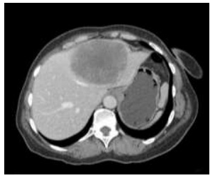
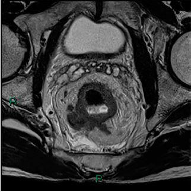
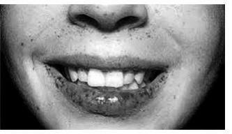

Questão 1 · Clínica Médica · Gastroenterologia · Cirurgia · 4000194298Uma paciente com 70 anos, diabética, com dor em anco esquerdo, de início insidioso e piora progressiva há 72 horas, chega ao pronto-socorro acompanhada de familiares. Eles relatam que, nos últimos 3 meses, observaram a ocorrência de episódios de sangramento retal vermelho-vivo, anorexia e perda ponderal de 10 Kg. Ao exame físico, a paciente apresenta- se em mau estado geral, torporosa, com frequência respiratória de 24 incursões respiratórias por minuto, frequência cardíaca de 116 batimentos por minuto, pressão arterial de 90 × 50 mmHg, abdome globoso, doloroso à palpação, com sinais de irritação peritoneal difusa. O resultado de radiografia simples evidencia pneumoperitôneo volumoso. Após discussão do caso com a família, deve ser proposto pelo cirurgião geral plantonista a realização de uma laparotomia, de uma
A enterectomia segmentar e de uma ileostomia.
B colectomia segmentar e de uma coloanastomose.
C limpeza e de uma drenagem da cavidade abdominal.
D colectomia segmentar e de uma colostomia de Hartmann.
Questão 2 · Estadiamento do Câncer do Cólon e do Reto · Câncer Colorretal · 4000187428Qual dos seguintes exames NÃO faz parte do estadiamento de neoplasia de reto?
A TC tórax
B RNM pelve
C CEA
D TC abdome
Questão 3 · Diagnóstico · Câncer Colorretal · Síndromes de Câncer Colorretal Hereditário · 4000187030Sobre o câncer colorretal, assinale a opção INCORRETA.
A A maioria dos cânceres de cólon são do tipo esporádico e evoluem a partir de um tumor benigno, o pólipo colônico adenomatoso.
B O risco de desenvolvimento de câncer é maior nos adenomas do tipo viloso do que nos do tipo tubular. O tamanho do pólipo também é importante, visto que quanto maior for o pólipo, maior é o risco de câncer.
C A síndrome de Peutz-Jeghers é caracterizadas pela presença de pólipos adenomatosos no trato intestinal associados a hiperpigmentação da mucosa bucal, dos lábios e dos dedos.
D Na síndrome de Lynch temos casos de câncer colônico em pacientes mais jovens que o habitual, predominantemente nos segmentos colônicos a direita e com tendência para vários casos de câncer na família (padrão familiar/genético).
E A colonoscopia, apesar de mais dispendiosa e mais invasiva, é o método padrão-ouro para o rastreamento na população em que o rastreamento é indicado.
Questão 4 · Síndrome de Polipose Hamartomatosa Hereditária · 4000186854Qual das síndromes abaixo tem maior associação com pólipos hamartosos?
A Turcot.
B Peutz Jeghers.
C Amyand.
D Polipose Adenomatosa Familiar.
Questão 5 · Rastreio Câncer Colorretal · 4000186787A neoplasia colorretal está entre as mais prevalentes na população adulta e um diagnóstico precoce tem importante impacto na terapêutica e morbimortalidade associada. Sobre a triagem de tumor colorretal assinale a melhor alternativa:
A Deve ser realizada apenas em pacientes com história familiar, após a idade em que o familiar mais jovem apresentou o diagnóstico.
B Deve ser feito com pesquisa de sangue oculto nas fezes a cada 10 anos a partir dos 50 anos de idade, independente de história familiar.
C Pessoas com Doença Inflamatória Intestinal não são consideradas de risco aumentado para neoplasia colorretal.
D A pesquisa deve iniciar aos 50 anos de idade em pacientes com risco moderado ou alto, ou antes em pacientes com história familiar, doenças inflamatórias intestinais e síndromes como a polipose adenomatosa. Entre as alternativas para triagem em assintomáticos está a colonoscopia a cada 10 anos.
E Pacientes idosos e com múltiplas comorbidades mantêm o benefício da triagem, mesmo se assintomáticos.
Questão 6 · Manif estações Clínicas · 4000186743Você está de plantão na emergência da UPA e admite paciente advinda da Unidade de Saúde da Família de 74 anos com história de dor abdominal, fraqueza, falta de apetite e anemia. Na história mórbida pregressa, a família relata que a paciente tinha sido operada de vesícula, retirado o útero e tomava remédios para "pressão alta". Em relação à doença atual, a paciente vem apresentando episódios de cólicas abdominais esporádicas com evacuações que variam de fezes endurecidas a diarreia, sendo que previamente aos sintomas relatava "intestino preso". No exame físico, o abdome estava plano sem distensão e à palpação profunda de anco direito a paciente apresentava massa palpável. A rotina hematológica confirmou a anemia (Ht: 32%), o RX de tórax e abdome estavam sem alterações. Com esses dados da história clínica e exame físico, pergunta-se: Qual é o diagnóstico provável?
A Neoplasia do pâncreas.
B Neoplasia do fígado.
C Colelitíase ou colecistite aguda.
D Neoplasia do cólon direito.
E Apendicite aguda.
Questão 7 · Introdução Rotas de Disseminação e História Natural · Estadiamento do Câncer do Cólon e do Reto · 4000186660Câncer do Reto Homem, 58 anos, possui diagnóstico por biópsia de adenocarcinoma de reto. Ao exame físico, o tumor pode ser palpado no toque retal. De acordo com o caso, qual dos exames a seguir fornece o maior conjunto de informações relevantes para o tratamento do tumor primário?
A PET-CT
B Retossigmoidoscopia flexível
C Ressonância nuclear magnética da pelve
D Tomografia computadorizada de pelve com contraste
Questão 8 · Estadiamento Patológico · Câncer do Cólon · 4000186497A Classi cação TMN para um paciente idoso submetido a colectomia esquerda oncológica por adenocarcinoma, cujo o laudo anatomopatológico evidenciou um tumor que in ltra a muscular, tem metástase para 1 linfonodo regional e não apresentava metástases a distância será:
A T2N1M0
B T3N1M0
C T4N2M0
D T3N2M0
Questão 9 · CEA · Cirurgia · 4000185602Paciente do sexo masculino, 55 anos de idade, realizou uma colonoscopia que mostrou uma tumoração subestenosante no reto médio. A biópsia confirmou a presença de adenocarcinoma. O cirurgião assistente solicitou exames de estadiamento pré-operatório. Com relação ao quadro clínico descrito acima, assinale a alternativa CORRETA.
A O nível sérico de antígeno carcinoembrionário basal é um fator prognóstico relacionado à sobrevida.
B A ressonância magnética pélvica tem menos acurácia que a tomografia para o estudo da margem circunferencial.
C A tomografia por emissão de pósitrons deve ser usada de rotina para a detecção de metástases a distância.
D A radiografia de tórax tem uma sensibilidade similar à tomografia para a detecção de metástases pulmonares.
Questão 10 · CEA · 4000185472O antígeno carcinoembrionário (CEA) deve ser solicitado:
A Em pacientes com câncer colorretal logo após a ressecção do tumor
B Em pacientes com diagnóstico de câncer colorretal antes da cirurgia
C Em pacientes com suspeita de câncer colorretal para acompanhamento
D Para todos pacientes após 45 anos para diagnóstico precoce de câncer colorretal
Questão 11 · Câncer de Cólon NãoPolipoide Hereditário · 4000183431Mulher, 32 anos, sem comorbidades, apresentou episódio de sangramento digestivo, sendo submetida à colonoscopia que evidenciou: uma lesão séssil de 3cm, friável, em cólon ascendente com sinais de sangramento recente, além de dois pólipos subcentimétricos em sigmoide e três pólipos subcentimétricos em cólon transverso. O histopatológico da lesão maior concluiu adenocarcinoma, os das demais lesões, adenomas tubulares. Sobre o caso em questão, assinale a alternativa CORRETA.
A Essa paciente tem o provável diagnóstico de Síndrome de Puetz-Jeghers, caracterizada pela instabilidade micro- satélite.
B Por ser uma paciente muito jovem, ela tem indicação formal de proctocolectomia total com anastomose tipo bolsa ileal.
C Caso a mãe da paciente tenha história de câncer de endométrio e a tia da paciente de câncer de pelve renal, já está caracterizada a Síndrome de Lynch II.
D Nesses casos, mesmo em idade fértil, a pan-histerectomia total é mandatória
E Por apresentar múltiplos pólipos colônicos, essa paciente tem o provável diagnóstico de polipose adenomatosa familiar.
Questão 12 · Cirurgia · Síndrome Carcinoide · 4000181762Leia o caso clínico. Paciente do sexo feminino, com 46 anos submetida à apendicectomia videolaparoscópica por quadro de apendicite aguda. Retorna no décimo quinto dia pósoperatório, com resultado de histopatológico, revelando tumor carcinoide de apêndice, com 1,3 cm. Qual deverá ser a conduta eletiva?
A Hemicolectomia direita com linfadenectomia e quimioterapia.
B Hemicolectomia direita com linfadenectomia.
C Hemicolectomia direita sem linfadenectomia.
D Observação clínica.
Questão 13 · Pólipos Intestinais · Cirurgia · 4000181226Um homem de 66 anos foi submetido à colonoscopia para rastreamento do câncer colorretal. Negava qualquer sintoma. Durante a colonoscopia, identificou-se, no cólon transverso, a lesão mostrada nas fotos 1 e 2. Qual é o diagnóstico e a respectiva conduta adequada?

A Neoplasia invasiva maligna / Ressecção endoscópica.
B Pólipo do cólon / Ressecção endoscópica.
C Pólipo do cólon / Colectomia direita ampliada.
D Neoplasia invasiva maligna / Quimioterapia neoadjuvante.
E Pólipo do cólon / Quimioterapia neoadjuvante.
Questão 14 · Síndrome de Polipose Adenomatosa Hereditária · 4000181184Sobre a polipose adenomatosa familiar (PAF), atribua V (verdadeiro) ou F (falso) às afirmativas a seguir. ( ) É uma síndrome de transmissão autossômica dominante. ( ) Se não tratadas, 100% dos casos vão evoluir para adenocarcinoma. ( ) O tratamento de escolha é a colectomia total com reconstrução com bolsa ileal e anastomose. ( ) Pólipos gástricos e duodenais podem ocorrer em até 50% dos casos. ( ) Os pólipos duodenais, quando presentes, geralmente, são hiperplásicos, não necessitando de intervenção. Assinale a alternativa que contém, de cima para baixo, a sequência correta.
A V, V, V, F, F.
B V, V, F, V, F.
C F, V, F, F, V.
D F, F, V, F, V.
E F, F, F, V, V.
Questão 16 · Câncer de Cólon NãoPolipoide Hereditário · Gastroenterologia · 4000177593A síndrome de Lynch é também denominada de câncer colorretal não polipoide hereditário (CCNPH), sendo responsável por, aproximadamente, 3% dos cânceres colorretais. Para a definição de CCNPH, é considerado um critério de Amsterdã:
A uma das pessoas afetadas ser parente em primeiro grau das outras duas pessoas afetadas.
B três gerações sucessivas afetadas.
C pelo menos um caso de câncer diagnosticado antes dos 40 anos.
D câncer de cólon e dois parentes em primeiro grau com câncer associado ao CCNPH.
Questão 17 · Diagnóstico · 4000176672Um paciente com 58 anos de idade, branco, trabalhador rural, refere cansaço aos esforços, que estão cando mais intensos, e dor abdominal esporádica, e m cólica, localizada e m anco direito, há 1 mês. Refere apresentar sangramento esporádico nas fezes, tipo hematoquezia. Exames realizados na Unidade Básica de Saúde apresentaram: hemoglobina: 8,5 mg/dL (valor de referência [VR]: 13 a 16 mg/dL); hematócrito: 25% (VR: 38% a 52%). Observa-se perda ponderai de 16% em relação ao peso habitual. Ao exame físico, mostra-se afebril, emagrecido, com dor à palpação profunda em anco direito e fossa ilíaca direita. Nesse caso, a hipótese diagnóstica mais provável é de
A tumor de cólon direito.
B tuberculose intestinal.
C doença diverticular do cólon.
D doença inflamatória intestinal.
Questão 18 · Cirurgia · Câncer Colorretal · 4000173542Paciente 72 anos, sexo masculino, evoluindo com alteração do hábito intestinal há 6 meses, alternando episódios d e constipação e diarreia. Realizou colonoscopia que evidenciou tumoração ulcerada em sigmoide, cujo histopatológico definiu adenocarcinoma invasivo. Realizou também tomogra as de tórax e abdômen com o seguinte achado: Sobre o caso em questão, assinale a alternativa CORRETA.

A A radioterapia é uma opção bastante utilizada para tratamento neoadjuvante nesse caso.
B Como o paciente apresenta doença metastática, o tratamento deve, apenas, ser quimioterápico.
C A realização de biópsia hepática é necessária para confirmar que a alteração do fígado configura metástase.
D O paciente poderá ser considerado para um tratamento multimodal (cirurgia do cólon, quimioterapia e cirurgia hepática) com perspectiva de cura, apesar do prognóstico reservado.
E Se o paciente não apresentar sintomas gastrointestinais graves, o sigmoide não precisará ser operado, devendo realizar, apenas, a cirurgia hepática.
Questão 19 · Neoplasias Apendiculares Pósapendicectomia · Neoplasias do Apêndice Cecal · Cirurgia · 4000169940Paciente de 43 anos, sexo masculino, submetido há 30 dias à apendicectomia devido a hipótese diagnóstica de apendicite aguda. O anatomopatológico denota cistoadenocarcinoma de apêndice cecal, de 2,5 cm de extensão, em base apendicular, com invasão de mesoapêndice. Qual a conduta adequada ao caso citado?
A Colectomia total.
B Hemicolectomia direita + linfadenectomia retroperitoneal.
C Quimioterapia adjuvante.
D Radioquimioterapia adjuvante.
E Conduta conservadora: a apendicectomia foi terapêutica.
Questão 20 · Cirurgia · Câncer Colorretal · 4000169934Paciente de 64 anos, masculino, com histórico de anemia a esclarecer, chega ao Ambulatório de Cirurgia Geral com colonoscopia recente denotando lesão ulcerada, vegetante e friável em cólon direito, ocupando 50% da luz do órgão. Biópsia indicou adenocarcinoma pouco diferenciado. Qual a melhor conduta para o caso, nesse momento?
A Tomografia de tórax, abdome e pelve + dosagem de CEA.
B Laparoscopia diagnóstica para investigar carcinomatose peritoneal.
C Transversostomia em alça.
D Radioquimioterapia neoadjuvante.
E Mucosectomia endoscópica da lesão.
Questão 21 · Síndrome de Polipose Hamartomatosa Hereditária · 4000169603Homem, 45 anos de idade, hígido, submetido a colonoscopia de rastreio. Comparece em consulta de retorno com laudo histopatológico evidenciando pólipos hamartomatosos. Assinale a alternativa que contém uma síndrome hereditária associada ao achado:
A Síndrome de Bannayan-Riley-Ruvalcaba
B Polipose adenomatosa familiar
C Síndrome de Peutz-Jeghers
D Síndrome de Lynch
E Síndrome de Gardner
Questão 22 · Cirurgia · Câncer Colorretal · 4000169530Em relação à neoplasia de cólon obstrutiva, é CORRETO afirmar que:
A Geralmente, as obstruções do cólon esquerdo não requerem colostomias.
B O stent colônico, apesar dos riscos para colocação, oferece a oportunidade de anastomose primária.
C Nos casos de obstrução e perfuração, a ressecção da lesão com anastomose deve ser realizada.
D A síndrome de Ogilvie pode ser resultado de obstruções neoplásicas em cólon esquerdo.
Questão 23 · Fatores de Risco · 4000167964Sobre os principais fatores de risco para o desenvolvimento do câncer colorretal (CCR), assinale a alternativa incorreta:
A A faixa etária mais acometida é entre 50 e 74 anos (cerca de 59% dos casos); apenas 10% ocorrem em pessoas abaixo de 50 anos e 31% em pessoas com mais de 74 anos.
B Maior quantidade de gordura corporal está relacionada a elevados níveis de insulina, com decorrente crescimento celular e inibição do processo de apoptose, sendo portanto a obesidade considerada um fator de risco importante para o ccr.
C Consumo moderado de álcool (ex: 125ml de vinho tinto seco ao dia) parece mostrar efeito protetor contra o ccr, entretanto há que se considerar seus efeitos deletérios principalmente sobre a função hepática.
D Pacientes portadores de doenças inflamatórias intestinais (rcu, crohn) têm risco maior de desenvolver ccr que a população geral.
E A recomendação para a prevenção do câncer colorretal é limitar o consumo de carne vermelha a até 500 gramas de carne cozida (equivalente a 750 gramas de carne crua) por semana e evitar o consumo de carnes processadas.
Questão 24 · Cirurgia · Câncer Colorretal · 4000167774Um paciente com 62 anos de idade apresenta alteração de hábito intestinal há um ano e perda ponderai de 15 kg em 2 meses. Nega ter realizado exames de rotina. No momento, apresenta diarreia intensa há 24 horas, com vários episódios de evacuações líquidas, associado a dor abdominal difusa. Ao exame físico, está desidratado, com FC = 115 bpm, FR =19 irpm, SatO2 = 97% e temperatura axilar = 37 °C. Considerando esse caso clínico e os conhecimentos médicos correlatos, julgue o item a seguir. Caso seja confirmado o diagnóstico de câncer colorretal, pode ser indicada a cirurgia de Hartmann, que consiste na hemicolectomia esquerda e na reconstrução com anastomose primária em dois planos.
A Certo.
B Errado.
Questão 25 · Cirurgia · Câncer Colorretal · 4000167773Um paciente com 62 anos de idade apresenta alteração de hábito intestinal há um ano e perda ponderai de 15 kg em 2 meses. Nega ter realizado exames de rotina. No momento, apresenta diarreia intensa há 24 horas, com vários episódios de evacuações líquidas, associado a dor abdominal difusa. Ao exame físico, está desidratado, com FC = 115 bpm, FR =19 irpm, SatO2 = 97% e temperatura axilar = 37 °C. Considerando esse caso clínico e os conhecimentos médicos correlatos, julgue o item a seguir. A tomogra a computadorizada é o exame para diagnóstico definitivo do câncer colorretal enquanto a colonoscopia é utilizada para estadiamento.
A Certo.
B Errado.
Questão 28 · Síndromes de Câncer Colorretal Hereditário · 4000167109Assinale a alternativa que relaciona corretamente a síndrome hereditária ao aumento do risco de câncer colorretal.
A A síndrome de Peutz-Jeghers é uma síndrome autossômica recessiva, caraterizada por pólipos hamartomatosos intestinais e hiperpigmentação da mucosa labial.
B A síndrome de Turcot é caracterizada, principalmente, por pólipos colorretais e adenomas tireoideanos.
C A síndrome de Lynch é caracterizada por pequeno número de pólipos colorretais e aumento do risco também de câncer de endométrio e ovário.
D A síndrome de Gardner é caracterizada pela presença de centenas a milhares de pólipos colorretais associados, principalmente, ao aumento do risco de câncer de colo uterino.
E A Polipose Adenomatosa Familiar (PAF) está fortemente associada à mutação do gene MLH1.
Questão 29 · Tratamento Neoadjuvante · 4000166359Com relação ao adenocarcinoma de reto, qual destas apresentações são elegíveis para se realizar neoadjuvância com radioterapia e quimioterapia?
A Colonoscopia com achado de lesão vegetante histopatologicamente confirmada, distante 15 cm da margem anal, ocupando 50% da luz e 50% da circunferência retal.
B Colonoscopia com achado de lesão vegetante histopatologicamente confirmada, distante 18 cm da margem anal, ocupando 75% da luz e 25% da circunferência retal.
C Colonoscopia com achado de lesão vegetante histopatologicamente confirmada, distante 12 cm da margem anal, ocupando 50% da luz e 100% da circunferência retal.
D Colonoscopia com achado de lesão vegetante histopatologicamente confirmada, distante 5 cm da margem anal, ocupando 50% da luz e 25% da circunferência retal
Questão 30 · Pólipos Intestinais · Gastroenterologia · 4000165155Com relação aos pólipos intestinais e aos síndromes polipoides, podemos afirmar que
A o gene responsável pela transmissão da polipose adenomatosa familiar (PAF) é o gene APC que se encontra localizado no cromossoma 5q23.
B na síndrome de Turcot, além dos pólipos intestinais, são frequentes os osteomas e os cistos de inclusão epidermoide.
C a hiperplasia congênita do epitélio pigmentar da retina é um marcador interessante para a PAF e pode ser detectado em 75% dos casos.
D na PAF os tumores malignos extra intestinais mais frequentes são dos ductos biliares extra hepáticos, da vesícula biliar e do pâncreas.
E o tratamento cirúrgico da PAF com proctocolectomia total abdominal com confecção de bolsa ileal e anastomose íleo-anal, não é mais preconizado devido ao alto índice de processo inflamatório da bolsa ileal (bolsite).
Questão 31 · Fatores de Risco · 4000164821Em relação aos fatores de risco para câncer colorretal assinale V para VERDADEIRO e F para FALSO. Na sequência assinale a opção CORRETA: ( ) Polipose Adenomatosa familiar é uma doença autossômica recessiva e caso essa condição não seja tratada com colectomia total o desenvolvimento de câncer colorretal é a regra em todos os casos, por volta da quarta década de vida. ( ) O câncer de cólon costuma ter uma maior incidência de multicentricidade quando está associado à doença inflamatória intestinal. ( ) A ingesta de bebidas alcóolicas aumenta discretamente a incidência de câncer colorretal. ( ) Pacientes submetidos a ureterossigmoidostomia apresentam risco de desenvolvimento de câncer colorretal de 2 à 15%. ( ) A inativação de genes supressores tumorais (APC, DCC, p53) assim como a ativação de oncogenes como o K-ras foram descritas como fatores de risco para o câncer colorretal.
A F – V – V – V – V.
B F – F – V – V – V.
C F – V – F – V – V.
D V – V – V – V – V.
Questão 32 · Tratamento do Câncer Retal · Cirurgia · 4000164067Paciente apresenta tenesmo progressivo, anemia e diarreia. Sem evidência de doença hepática ou pulmonar, realizou retossigmoidoscopia exível, que visualizou tumoração retal de 12cm, a 8cm da margem anal. O resultado da biópsia confirmou adenocarcinoma de reto. Nesse caso, o paciente poderá ser considerado apto para realizar:
A ressecção abdominoperineal do reto e radioterapia adjuvante
B radioterapia neoadjuvante e ressecção anterior de reto
C colostomia com quimioterapia paliativa
D retossigmoidectomia sem adjuvância
Questão 33 · Fatores de Risco · 4000153182Paciente 65 anos, masculino, apresentando alteração do hábito intestinal. Como história familiar, apresenta pai falecido de câncer de próstata aos 70 anos, mãe falecida de câncer de colo de útero aos 80 anos, avô paterno e primo por parte de mãe falecidos por câncer de cólon com 60 e 50 anos respectivamente. Realizou colonoscopia que evidenciou lesão estenosante na junção reto-sigmoidiana, 3 pólipos em reto e 5 pólipos em sigmoide. O resultado histopatológico da lesão estenosante foi adenocarcinoma de cólon moderadamente diferenciado. Quanto aos pólipos, todos eram de natureza adenomatosa, sendo 5 tubulares e 2 túbulo-vilosos (ambos no reto). Em qual das situações abaixo, levando em conta a história familiar e o diagnóstico, esse paciente melhor se enquadra?
A Câncer colorretal hereditário não polipoide (Síndrome de Lynch).
B Síndrome de Polipose Recessiva.
C Polipose adenomatosa familiar.
D Câncer colorretal esporádico.
Questão 34 · Diagnóstico endoscópico · 4000153173Um homem com 58 anos de idade foi atendido em ambulatório de hospital secundário. Relatava sangramento e muco nas fezes, referia também alteração do hábito intestinal, com aumento do número de evacuações há 5 meses. O exame físico geral não apresentava particularidades e o toque retal evidenciou tumoração na parede posterior do reto, aproximadamente 7 cm acima da borda anal. Com base nos dados apresentados, a alternativa correta sobre o exame necessário para definir a conduta a ser seguida é
A ultrassonografia endorretal.
B ressonância nuclear magnética endorretal.
C enema baritado com duplo contraste.
D colonoscopia com biópsia.
Questão 35 · Diagnóstico endoscópico · Cirurgia · 4000152078Odete, 74 anos, chega ao consultório com história de hematoquezia intermitente, de pequeno volume, nos últimos 6 meses, período em que tem notado piora da constipação intestinal e perda ponderal. Você realiza toque retal no consultório, sem alterações. Qual é a hipótese diagnóstica a ser considerada e a conduta mais apropriada?
A Doença hemorroidária. Prescrever dieta rica em fibras, aumentar a ingestão de líquidos, banhos de assento e atividade física regular.
B Tumor de cólon direito. Solicitar retossigmoidoscopia.
C Doença inflamatória intestinal. Solicitar calprotectina fecal
D Tumor de cólon esquerdo. Solicitar colonoscopia.
Questão 36 · Diagnóstico · 4000146616Uma paciente com 35 anos de idade procura atendimento hospitalar devido a episódio único de sangramento anal vermelho vivo, indolor, em pequena quantidade durante evacuação. Nega qualquer história prévia de traumatismo local. Em seu exame físico, constatou-se que a paciente está em bom estado geral, normocorada, PA = 120 x 60 mmHg, FC = 76 bpm e com pulso radial amplo, regular. Abdome plano e depressível, indolor à palpação, sem massas palpáveis e sem sinais de irritação peritoneal. A anuscopia não demonstrou doença hemorroidária externa e/ou ssuras anais e/ou fístulas perianais. O toque retal não identi cou lesões palpáveis, até cerca de ± 6 cm da margem anal, porém, evidenciou discreta quantidade de sangue em dedo-de-luva. O médico assistente solicitou hemograma, cujo resultado foi normal. A paciente foi liberada com encaminhamento ambulatorial e com solicitação de exame de colonoscopia. O resultado da colonoscopia mostrou alguns pólipos colônicos, não pediculados, e lesão de borda elevada com ulceração central, séssil, ± 1,5 cm de diâmetro, em cólon sigmoide, distando ± 35 cm da margem anal - a qual foi biopsiada. Nesse caso clínico, a hipótese diagnóstica mais provável para essa paciente é de
A polipose adenomatosa familiar.
B síndrome de Peutz-Jeghers.
C neoplasia colônica.
D doença de Crohn.
Questão 37 · Rastreio Câncer Colorretal · 4000146435Homem, 50 anos, fez a primeira colonoscopia para rastreamento de câncer de cólon. Não tem história familiar de câncer intestinal. Comparece no ambulatório com o seguinte resultado: dois pólipos em sigmoide de 15 mm retirados sem intercorrências; anátomo-patológico: adenomas tubulares de baixo grau. A próxima colonoscopia deve ser feita em
A dez anos.
B sete anos.
C cinco anos.
D três anos.
E um ano.
Questão 38 · Diagnóstico · Estadiamento do Câncer do Cólon e do Reto · Tratamento do Câncer Colônico · 4000145969Paciente, 62 anos de idade, com queixa de sangramento ao evacuar há cerca de 6 meses, associada à perda de 5kg de peso no período, realizou colonoscopia que visualizou lesão vegetante e ulcerada no cólon sigmoide, com 5cm de extensão. Anatomopatológico confirmou adenocarcinoma invasivo moderadamente diferenciado. Exames de estadiamento não evidenciaram lesões secundárias. Em relação ao caso, assinale a alternativa correta:
A O estadiamento foi realizado com tomografia de tórax e ecoendoscopia da lesão.
B O tratamento indicado é a retossigmoidectomia com linfadenectomia e anastomose colorretal, preferencialmente por via laparoscópica.
C A principal conduta é realizar quimioterapia e, em seguida, tratamento cirúrgico, caso ainda persista lesão primária.
D O CEA é um marcador tumoral importante e, caso esteja normal, deve-se considerar a hipótese de lesão benigna.
Questão 39 · Rastreio Câncer Colorretal · 4000145465Homem de 67 anos vai ao clínico para a avaliação periódica de saúde. Está assintomático. Diz que apresentou anemia nos exames ocupacionais solicitados pelo médico do trabalho (disponíveis a seguir). Fumou 1 maço de cigarro por dia dos 20 aos 55 anos; nega etilismo e uso contínuo de medicamentos. O pai teve câncer de cólon aos 56 anos e a mãe tem hipertensão arterial sistêmica. Ao exame, PA 146x92mmHg, FC 76bpm, FR15ipm, IMC 32kg/m² • O abdome é globoso e normotenso. Sem outras anormalidades ao exame. Os exames laboratoriais mostram: Hb 11,2g/dl; Hct 30,2%; VCM 76 ; HCM 24,2pg; VHCM 30, 1 g/dl; leucócitos totais 4.500/mm³ ; plaquetas 340.890/mm³ • Dentre as condutas seguintes adotadas pelo médico, assinale a que está ADEQUADA.
A Dosagem da hemoglobina glicada para rastreio de diabetes mellitus
B Mapeamento ambulatorial da PA para confirmar hipertensão arterial sistêmica
C Pesquisa de sangue oculto nas fezes para rastreio do câncer colorretal
D Ultrassonografia de abdome para rastreio de aneurisma da aorta abdominal
Questão 40 · Manif estações Clínicas · Tratamento do Câncer Retal · Estadiamento do Câncer do Cólon e do Reto · 4000145415O câncer de cólon é um dos principais tumores malignos, tanto nos homens quanto nas mulheres. Em relação ao seu diagnóstico, estadiamento e tratamento, assinale a alternativa correta:
A O enema opaco é indicado para avaliar alteração do hábito intestinal e, dessa forma, para o diagnóstico da neoplasia de cólon.
B A pesquisa de sangue oculto nas fezes é a forma de rastreamento apropriada para este tipo de tumor.
C A tríade anemia, perda ponderai e massa palpável é típica do câncer de cólon direito.
D A quimioterapia é a principal forma de tratamento, sendo a cirurgia realizada apenas para os casos de pacientes sintomáticos.
Questão 41 · Diagnóstico · 4000144331Paciente de 69 anos, tabagista, comparece no consultório com queixa de astenia e prostração, refere ainda períodos de constipação intestinal com episódios alternados de diarreia. Ao exame físico não se encontram grandes alterações. Em relação à conduta imediata assinale alternativa correta.
A Solicitar tomografia abdominal.
B Solicitar Ressonância magnética abdominal.
C Solicitar colonoscopia.
D Solicitar pesquisa de sangue oculto nas fezes.
Questão 42 · Tratamento Adjuvante · 4000141793Mulher, 62 anos, previamente hígida, apresenta sangramento retal vivo e espontâneo. Refere ainda tenesmo. Nega perda de peso. Ao toque, tumoração a 5-6 cm da margem anal. Biópsia evidenciou adenocarcinoma bem diferenciado. Avaliando-se a ressonância magnética abaixo, deve-se propor idealmente o seguinte tratamento:

A amputação abdominoperineal de reto e radioterapia pós-operatória.
B ressecção anterior de reto como tratamento único.
C quimio e radioterapia curativas (sem cirurgia).
D quimio e radioterapia pré-operatórias, seguidas de cirurgia.
E quimioterapia com bevacizumab e
Questão 43 · Diagnóstico · 4000141120Mulher, 61a, vem com queixa de sangue vivo nas fezes há cerca de quatro meses. O sangue é em pequena quantidade e não há dor ao evacuar. Nega náusea, vômitos ou perda de peso. Nega história familiar de neoplasia. Antecedente pessoal: diabete melito tipo 2, em uso de metformina. Exame físico: descorada +/4+. PARA O PROSSEGUIMENTO DA INVESTIGAÇÃO ETIOLÓGICA DEVE REALIZAR:
A Tomografia computadorizada de abdome e sangue oculto nas fezes.
B Tomografia computadorizada de abdome e enema opaco.
C Toque retal e pesquisa de sangue oculto nas fezes.
D Toque retal e colonoscopia.
Questão 44 · Tratamento das Metástases Hepáticas do CCR · 4000141040Assinale a alternativa correta.
A As lesões metastáticas do fígado têm como origem, em sua grande maioria, os tumores primários de estômago, com uma taxa de sobrevida de 2% em 5 anos.
B A neoplasia de pâncreas é a que mais desenvolve metástase hepática, chegando a 90% dos casos de metástase de fígado.
C O câncer de mama, hoje, representa as maiores taxas de lesões metastáticas para o fígado.
D As lesões metastáticas do fígado têm como origem, em sua grande maioria, os tumores provenientes do colón e do reto e apresentam uma taxa média de sobrevida de 50% em 5 anos após hepatectomia.
E Os hepatocarcinomas têm diminuído sua incidência e não guardam relação com os quadros cirróticos e de hepatite prévia.
Questão 45 · Tratamento Cirúrgico · 4000140756Homem de 59 anos de idade procura o Serviço de Emergência com dor abdominal em cólica, difusa, há 3 dias, associada a distensão abdominal e parada de eliminação de gases e fezes. Refere alteração do hábito intestinal há 3 meses, com necessidade de laxativos para evacuar, além de sangue nas fezes e alteração do formato. Nega vômitos. Não tem antecedentes mórbidos relevantes e nega operações prévias. Ao exame físico está em bom estado geral, corado, desidratado, IMC: 31kg/m2. Semiologias cardíaca e pulmonar normais. Abdome: ácido, distendido, pouco doloroso à palpação, sem sinais de irritação peritoneal e sem massas palpáveis. No toque retal, ausência de fezes na ampola, presença de lesão ulcerada circunferencial a 6 cm da borda anal e presença de sangue. Realizada tomogra a de abdome e pelve: ausência de lesões hepáticas, sem liquido livre. Distensão apenas de cólon e espessamento do reto médio distal com linfonodos aumentados no mesorreto. Qual é a conduta?
A Ileostomia em alça por laparotomia.
B Retossigmoidectomia oncológica e colostomia terminal.
C Colostomia em alça por laparotomia.
D Amputação de reto com linfadenectomia.
Questão 46 · Manif estações Clínicas · 4000140693Homem de 50 anos de idade apresenta-se à consulta na unidade básica de saúde com exames laboratoriais evidenciando anemia hipocrômica e microcítica. Para a investigação diagnóstica dessa situação, é importante solicitar
A pesquisa de sangue oculto nas fezes, para excluir doenças do trato gastrointestinal.
B colonoscopia, para excluir neoplasia dos cólons.
C dosagens de ferro, vitamina B12 e ácido fólico, para excluir anemias carenciais.
D eletroforese de hemoglobinas, para excluir causa falciforme.
Questão 47 · Câncer de Cólon NãoPolipoide Hereditário · 4000140615Paciente do sexo masculino, de 45 anos, apresentou, há 3 meses, alteração do hábito intestinal, dor abdominal e hematoquezia. Realizou colonoscopia que evidenciou lesão vegetante ulcerada em cólon ascendente com 3 cm e outra lesão com 2,0 cm, em cólon transverso, apresentando as mesmas características. Biópsias das lesões foram compatíveis com adenocarcinoma pouco diferenciado com células em anel de sinete. Estudo imuno-histoquímico mostrou expressão de proteínas MSH2 e MSH6 e ausência de expressão de MLH1 e PMS2. O paciente informou que pai teve câncer de cólon aos 52 anos, e a irmã, câncer de cólon aos 48 anos. O quadro clínico é sugestivo de
A síndrome de Turcot.
B polipose adenomatosa familial atenuada.
C síndrome de Cowden.
D síndrome de Lynch.
Questão 48 · Rastreio Câncer Colorretal · 4000139800Solicita-se uma colonoscopia para histórico de tabagismo ou história familiar de neoplasia. O laudo do exame mostra a presença de 2 pólipos (5 e 7 mm), localizados em sigmoide, com o estudo anatomopatológico mostrando pólipo hiperplásico. Diante do resultado apresentado, qual é a conduta a ser adotada?
A Repetir colonoscopia em 3 meses.
B Repetir colonoscopia em 1 ano.
C Realizar apenas retossigmoidoscopia em 3 meses para reavaliação.
D Realizar apenas retossigmoidoscopia para seguimento em 1 ano.
E Repetir colonoscopia preventiva em 5 a 10 anos.
Questão 49 · Estadiamento do Câncer do Cólon e do Reto · 4000132800Sobre a propedêutica básica frente ao diagnóstico de câncer colorretal, assinale a alternativa correta.
A Todos os casos de doença metastática contraindicam o tratamento definitivo.
B A cintilografia por emissão de pósitrons (PET- SCAN – PET-CT) está indicada de rotina na avaliação inicial do câncer colorretal.
C O peritônio é o sítio mais difícil para avaliação pelos exames de imagem.
D O antígeno carcinoembrionário (CEA) pré-operatório elevado é marcador de pior prognóstico.
Questão 50 · Estadiamento do Câncer do Cólon e do Reto · 4000132788Assinale a alternativa que apresenta o item que não contribui para o estadiamento da neoplasia do cólon.
A Dosagem do antígeno carcinoembrionário (CEA).
B Exame físico.
C Tomografia computadorizada de abdome.
D Radiografia do tórax.
Questão 51 · Câncer de Cólon NãoPolipoide Hereditário · 4000130969Paciente masculino, 36 anos de idade, procurou seu clínico geral para realizar uma colonoscopia, pois sua irmã de 40 anos foi recém diagnosticada com adenocarcinoma de cólon. Além da irmã, o pai do paciente faleceu aos 60 anos por obstrução intestinal maligna e seu tio, por adenocarcinoma de ceco aos 55 anos. O paciente nega perda ponderal, hematoquezia e seu exame físico é totalmente normal. Considerando o exposto, como deve ser feito o rastreio de neoplasia colorretal deste paciente?
A Solicitar pesquisa de sangue oculto nas fezes; se negativa, tranquilizar o paciente
B Fazer o rastreio padrão com colonoscopia aos 50 anos, repetindo de 10 em 10 anos
C Solicitar colonoscopia virtual ou 3D, já que este exame tem maior sensibilidade
D Solicitar colonoscopia e, conforme resultado, repetir a cada 1 ou 2 anos
E Realizar dosagem de CEA e, caso elevado, solicitar pesquisa dos genes MLH1, MSH2 e MSH6
Questão 52 · Fatores de Risco · Gastroenterologia · 4000129214Todas as alternativas abaixo contemplam fatores de risco potencialmente associados a aumento da incidência de câncer de intestino,
A Uso de aspirina e de anti-inflamatórios não esteroidais
B Obesidade e consumo elevado de produtos processados
C Polipose adenomatose familiar e polipose juvenil
D Doença inflamatória intestinal e doença celíaca
Questão 53 · Diagnóstico · 4000128419Com referência ao câncer de cólon, é correto afirmar:
A O cólon direito é o local da maior prevalência da doença.
B História familiar não é importante para detecção precoce em pacientes portadores de lesão.
C A colonoscopia é o exame de escolha na detecção, por permitir diagnóstico topográfico e biópsia da lesão.
D A presença de pólipo inflamatório é o principal sinal do alerta, devendo, sempre que presente, indicar repetição do exame anualmente.
E Os pulmões são os principais focos de metástase sistêmica.
Questão 54 · Rastreio Câncer Colorretal · 4000142317Paciente, M.J.F, sexo feminino, 52 anos, tabagista, compareceu à UBS para consulta de rotina, sem queixas. Dentre os exames solicitados pelo médico de família, está o exame de pesquisa de sangue oculto nas fezes pelo método imunoquímico positivo. Qual a razão da solicitação desse exame?
A Identificar possível úlcera.
B Rastrear câncer de colo retal.
C Diagnosticar uma colite.
D Rastrear doença de Chron.
Questão 55 · Câncer de Cólon NãoPolipoide Hereditário · Diagnóstico laboratorial · 4000127307Uma paciente com 35 anos de idade procurou a demanda espontânea de atendimentos em unidade básica de saúde pois queria fazer uma colonoscopia e estava muito preocupada com o diagnóstico de câncer colorretal em sua irmã de 37 anos. Ela era totalmente assintomática e relatava que o pai faleceu aos 58 anos por uma obstrução intestinal provocada por um câncer colorretal, e que um tio paterno foi operado em decorrência de um tumor de ceco, aos 55 anos. A paciente negava comorbidades e seu exame físico foi completamente normal. Considerando a situação clínica apresentada, qual deve ser a forma proposta para rastreamento de câncer colorretal a essa paciente?
A Solicitar pesquisa de sangue oculto nas fezes e a colonoscopia, se for positiva.
B Orientar a realização de colonoscopia a partir dos 40 anos, repetindo o exame a cada 5anos.
C Solicitar colonoscopia e mediante resultado normal repetir o exame a cada um ou dois anos.
D Orientar a realização de colonoscopia a partir dos cinquenta anos, repetindo o exame a cada dez anos.
Questão 56 · Síndrome de Polipose Adenomatosa Hereditária · 4000125753A síndrome de Gardner é a polipose adenomatosa familiar que cursa com
A câncer de ovário.
B osteoma.
C câncer gástrico.
D osteosarcoma.
E câncer de endométrio.
Questão 57 · Tratamento do Câncer Colônico · 4000125741Paciente de 15 anos de idade, sexo masculino, durante uma evacuação na escola, notou sangramento retal. A colonoscopia revelou incontáveis pólipos no cólon e no reto, e o laudo histopatológico da biopsia de um desses pólipos confirmou pólipo adenomatoso. O pai dele morrera aos 54 anos, devido a um sangramento retal. A conduta mais apropriada, neste caso, é
A proctocolectomia total.
B acompanhamento com colonoscopia a cada 2 meses.
C dieta laxativa.
D orientar o paciente a não usar papel higiênico.
E aguardar a transformação de alguns pólipos para câncer.
Questão 58 · Fatores de Risco · Epidemiologia · 4000124926Com relação ao câncer colorretal em pacientes geriátricos, assinale a alternativa incorreta:
A O câncer colorretal é, predominantemente, uma doença do envelhecimento e uma causa importante de morbimortalidade na população idosa.
B O aumento da idade é um fator de prognóstico favorável no câncer colorretal.
C A apresentação de sinais e sintomas do câncer colorretal depende da localização do tumor e não varia substancialmente com a idade.
D A incidência anual de câncer de cólon é quase 40 vezes maior para aqueles com mais de 85 anos, comparada com indivíduos com 40 a 44 anos.
Questão 59 · Manif estações Clínicas · 4000124070As manifestações mais frequentes dos tumores do colón direito (até o ângulo esplênico) e do colón esquerdo são, respectivamente:
A massa palpável, distensão e constipação / massa palpável, distensão e constipação.
B massa palpável, distensão e constipação / massa palpável, anemia e melena.
C melena, anemia e fadiga / cólicas abdominais, diarreia alternando constipação e distensão.
D massa palpável, hematócrito elevado e desidratação / melena, massa palpável e diarreia.
E dor em cólica, distensão abdominal e constipação / massa palpável, melena e fadiga.
Questão 60 · Tratamento do Câncer Retal · 4000121222A evolução do tratamento cirúrgico do câncer de reto apresentou grandes mudanças nos últimos anos, e um dos grandes benefícios foi a realização de anastomoses colorretais ultrabaixas ou coloanais com a preservação do aparelho esfincteriano. Marque a alternativa correta sobre a evolução do tratamento do câncer de reto:
A A ressecção total do mesorreto é um procedimento atualmente utilizado somente em cirurgias videolaparoscopicas, pois apresentam um risco maior de lesao dos nervos epigastricos nas cirurgias abertas.
B A terapia neoadjuvante apresentou um impacto de grande importância na confecção das anastomoses colorretais ultrabaixa e coloanal com cirurgias para preservação do aparelho esfincteriano.
C A cirurgia de hartmann é a primeira escolha nos casos de tumores de reto alto associado a quimioterapia neoadjuvante.
D A cirurgia de miles ainda e a primeira escolha nos tumores de reto inferior diagnosticados na ressonância nuclear magnética.
E A cirurgia de Miles esta em desuso pois apresenta um alto índice de recidiva local, sendo substituida pela ressecção total do mesorreto nos tumores de reto médio e baixo.
Questão 61 · Diagnóstico laboratorial · 4000120170Quanto ao rastreamento do câncer colorretal (CCR), julgue os itens subsequentes. I - A pesquisa de sangue oculto (PSO) nas fezes por meio do método guáiaco ou imunoquímico diminuiu a mortalidade devido a CCR, mas não a incidência. II - Pacientes com queixa de sangramento anal eventual e sem antecedentes familiares de pólipos ou CCR devem ser rastreados com PSO a partir dos cinquenta anos de idade. III - A colonoscopia é o único exame que deve ser solicitado aos pacientes com risco alto para CCR. IV - A PSO por meio do método imunoquímico tem baixa sensibilidade para pólipos menores que 1 cm. A quantidade de itens certos é igual a
A 0
B 1
C 2
D 3
E 4
Questão 62 · Manif estações Clínicas · 4000114275Paciente do sexo feminino, 78 anos, hígida até recentemente, encaminhada com queixa de astenia e palidez. Teve perda ponderal de 7 kg (>10% do peso) nos últimos 3 meses, embora mantenha boa aceitação alimentar. Nega também variação do hábito intestinal, embora tenha cólicas em região periumbilical de leve a moderada intensidade. Nega melena, hematêmese, hematoquezia, disfagia, dispnéia ou vômitos. Tem exames laboratoriais alterados: Hb 8,3; Ht 21%, pesquisa de sangue oculto nas fezes positiva. Considerando o perfil clínico e epidemiológico, a topografia mais provável de uma neoplasia neste caso é:
A esôfago;
B estômago;
C cólon ascendente;
D cólon sigmoide.
Questão 63 · Diagnóstico laboratorial · 4000114157Paciente do sexo feminino, 55 anos, hígida em consulta de rotina em UBS pergunta ao médico sua opinião a respeito de rastreamento para câncer colo retal. Nega antecedentes familiares dessa neoplasia e nunca foi submetida a este rastreamento previamente. De acordo com as recomendações atuais para a população brasileira, tendo como objetivo oferecer as melhores condições para diagnóstico precoce e a prevenção desse tipo de neoplasia, o médico, nesta consulta indicou:
A Exame proctológico e sangue oculto nas fezes;
B Colonoscopia e antígeno cárcino embrionário;
C Sangue oculto nas fezes e colonoscopia;
D Exame proctológico e colonoscopia.
Questão 64 · Rastreio Câncer Colorretal · 4000108423Sobre o rastreamento do câncer de cólon por meio de pesquisa de sangue oculto nas fezes, é correto a rmar que deve ser realizado anual ou bianualmente
A em homens e mulheres acima dos 50 anos, uma vez que evidências mostram que este rastreamento reduz a mortalidade por câncer de cólon.
B em pacientes mulheres, a partir dos 50 anos, e reduz em 14% a mortalidade por câncer de cólon quando aplicado ao longo de 10 anos.
C em pacientes mulheres, a partir dos 40 anos, mesmo na ausência de sinais de alerta.
D após colonoscopia positiva para pacientes maiores de 50 anos, apesar da pouca evidência na redução da mortalidade.
Questão 65 · Tratamento do Câncer Retal · 4000107722Mulher de 62 anos de idade, em consulta ambulatorial com queixa de fezes a ladas, por vezes também com sangue e perda de peso de 7kg no último ano. Realizou colonoscopia completa, que evidenciou lesão ulcerada, ocupando 50% da luz do reto, a 6cm da borda anal. Estadiamento com ressonância magnética da pelve mostrou lesão restrita ao reto, com linfonodos aumentados em mesorreto. Tomogra a de tórax e abdômen superior sem sinais de doença metastática. Biópsia da lesão revelou tratar-se de adenocarcinoma moderadamente diferenciado. Em relação ao caso, assinale a alternativa correta:
A O tratamento indicado, nesse momento, é iniciar com quimioterapia e radioterapia neoadjuvante, seguindo de novo estadiamento, conforme as evidências.
B Trata-se de neoplasia maligna do reto, sem metástases. Deve-se prosseguir, imediatamente, com retossigmoidectomia, linfadenectomia e anastomose primária.
C Trata-se de lesão de reto baixo, sem possibilidade de preservação esfincteriana. Dessa forma, a cirurgia indicada é a amputação abdominoperineal do reto.
D Nas neoplasias do reto, a excisão total do mesorreto deve ser realizada apenas nos casos em que há suspeita de comprometimento dos linfonodos, pelos exames pré-operatórios de imagem.
Questão 66 · Tratamento do Câncer Retal · 4000107630Num paciente de 40 anos, com lesão subestenosante de reto baixo, realizou-se estadiamento com tomogra a de tórax, abdome e pelve, que evidenciou espessamento do reto baixo, com alteração do sinal da gordura perirretal e estruturas nodulares no mesorreto compatíveis com linfonodomegalia. Nessa situação, o tratamento neoadjuvante tem como objetivo todas as ações listadas a seguir, EXCETO
A downstaging da lesão.
B preservação esfincteriana.
C melhora na sobrevida.
D redução da recidiva local.
E mudança na conduta cirúrgica.
Questão 67 · Abdome Agudo Obstrutivo · Câncer Colônico Complicado · Cirurgia · 4000106271A cirurgia de Hartmann é possivelmente a mais realizada na urgência, no tratamento do doente com neoplasia obstrutiva de cólon esquerdo. Principal motivo para a adoção desse procedimento, no contexto indicado:
A Lesão perfurada com peritonite.
B Idade avançada.
C Prevenção da morbidade relacionada a possível deiscência de anastomose ereoperacão, com o consequente retardo no início do tratamento oncológico complementar.
D Desnutrição, principalmente se associada a hipoalbuminemia.
E Existência de doença neoplásica peritoneal, caracterizada por implantes esparsos noepíplon e/ou metástases hepáticas.
Questão 68 · Classif icações dos Pólipos · Sequência AdenomaCarcinoma · 4000103542Dentre os achados da colonoscopia, aquele com mais risco para transformação maligna é:
A Pólipo adenomatoso túbulo-viloso
B Pólipo inflamatório em pacientes com Doença de Crohn
C Pólipo adenomatoso tubular
D Pólipo adenomatoso viloso
Questão 69 · Estadiamento do Câncer do Cólon e do Reto · 4000102461Homem, 72 anos de idade, foi submetido a cirurgia abdominal para a ressecção de um câncer de cólon esquerdo. O estudo anatomopatológico, pós-cirúrgico, do seguimento ressecado revelou a presença de neoplasia metastática em um dos 15 linfonodos examinados. Qual é o estadiamento da doença conforme este achado?
A Estadio IB
B Estadio IV
C Estadio IIB
D Estadio IIA
E Estadio IIIA
Questão 70 · Síndrome de Polipose Hamartomatosa Hereditária · 4000096149As síndromes de Peutz-Jeghers, polipose adenomatosa associada ao MUTYH e síndrome de polipose serrilhada estão associadas a risco aumentada de câncer em qual órgão?
A Ovário.
B Cólon.
C Útero.
D Endométrio.
Questão 71 · Pólipos Intestinais · 4000094126Das lesões polipóides abaixo, a que apresenta maior potencial de degeneração maligna é:
A Adenoma tubular.
B Pólipo hiperplásico.
C Adenoma viloso.
D Hamartoma.
Questão 72 · Classif icações dos Pólipos · Sequência AdenomaCarcinoma · 4000086538Em relação às mutações genéticas que promovem a sequência adenoma-carcinoma no câncer colorretal, é correto a rmar que:
A uma das primeiras alterações é a formação das criptas por mutação do gene supressor de tumor APC
B os adenomas tubulares têm maior risco de malignização que os adenomas vilosos
C pacientes com câncer de cólon e mutação no gene p53 têm melhor prognóstico
D os adenomas vilosos geralmente são do tipo pedunculados
Questão 73 · Câncer de Cólon NãoPolipoide Hereditário · 4000085786Em relação ao câncer colorretal hereditário sem polipose os critérios clínicos incluem, no mínimo, _______________ parentes portadores de adenocarcinoma de cólon com _______________ gerações sucessivas afetadas e, pelo menos, um caso abaixo dos _______________ anos de idade. A esses critérios é adicionada a história de surgimento de tumores de _______________ entre indivíduos das famílias afetadas.
A 2 - 2 - 40 - endométrio
B 2 - 3 - 50 - intestino delgado
C 3 - 3 - 40 - intestino delgado
D 3 - 2- 50 - endométrio
Questão 74 · Classif icações dos Pólipos · 4000084364Paciente masculino, 52 anos, lhe procura em sua UBS pois foi submetido a colonoscopia para rastreio de câncer colorretal, durante a qual foi realizada retirada de pólipo colônico. O mesmo apresentou diagnóstico de adenoma serrilhado, gerando apreensão no paciente. Quanto a este tipo de pólipo, sabe-se que:
A Predomina no lado direito do cólon e está associado ao desenvolvimento de câncer
B Predomina no lado esquerdo do cólon e está associado ao desenvolvimento de câncer
C É mais frequente em mulheres jovens e tabagistas
D É mais frequente em mulheres jovens e não tabagistas
Questão 75 · Sequência AdenomaCarcinoma · 4000084304Homem de 65 anos apresenta história de emagrecimento, constipação, fezes em ta, tenesmo e episódios de hematoquezia. No exame físico, encontra-se descorado ++/4, emagrecido, com FC = 110bpm e PA = 100 x 70mmHg. A palpação abdominal é indolor e não apresenta visceromegalias. O toque retal mostra sangue vivo na luva, sem massas no fundo de saco, e próstata aumentada, de consistência elástica, mas sem nodulações. Em relação ao tumor maligno mais provável, é correto afirmar que o(a):
A lesão precursora tende a ser um pólipo, com transformação para adenocarcinoma
B melhor exame para o diagnóstico é a tomografia computorizada contrastada
C tratamento mais eficaz é feito com radioterapia associada à quimioterapia
D disseminação por via hematogênica é mais precoce que a linfática
Questão 76 · Classif icação de Haggitt · 4000075754Segundo a classificação de Haggitt para pólipos intestinais com câncer, o nível que representa um pólipo com carcinoma invadindo a camada muscular da mucosa para dentro da submucosa, restrito à cabeça do pólipo é:
A 0
B 1
C 2
D 3
Questão 77 · Síndrome de Polipose Hamartomatosa Hereditária · 4000074998Homem, 40 anos, com queixa de constipação, é submetido à colonoscopia que demonstra múltiplos pólipos hamartomatosos colônicos. Exame físico: numerosas e diminutas nodulações na mucosa oral, além de ceratose palmar e plantar. A hipótese diagnóstica mais provável da condição de base deste paciente é:
A síndrome de Cowden
B tilose
C síndrome de Peutz-Jeghers
D síndrome de Gardner
Questão 78 · Manif estações Clínicas · 4000074707Homem, 72 anos de idade, com queixa de astenia progressiva associada a perda de peso (7% em 4 meses, sem dieta). Há 1 mês com diarreia, com muco junto às fezes, sendo que previamente o paciente apresentava hábito intestinal normal. Traz consigo hemograma realizado na Unidade Básica de Saúde, o qual revela anemia microcítica e hipocrômica. Qual é o diagnóstico para o caso?
A Diverticulite aguda
B Neoplasia de reto alto
C Neoplasia de cólon direito
D Síndrome do intestino irritável
Questão 79 · Tratamento do Câncer Colônico · 4000074607Mulher, 62 anos de idade, comparece para consulta médica com queixa de sangue nas fezes há 1 ano. Refere também que no período chegou a receber 1 bolsa de sangue devido a anemia e perdeu 7kg. Não há outros antecedentes pessoais. Traz um exame de colonoscopia completa que evidenciou uma lesão ulcerada no colón sigmoide, de cerca de 5cm, que ocupa 50% da luz e está localizada a 17cm da borda anal. Os exames de tomogra a de tórax, abdômen e pelve não tem alterações. Sobre o caso descrito, indique a alternativa que descreve a conduta apropriada para o caso:
A A lesão é passível de ressecção por colonoscopia, sendo esta a melhor opção terapêutica.
B Trata-se de lesão possivelmente benigna e a melhor conduta é repetir nova colonoscopia em 6 meses.
C Há indicação de tratamento cirúrgico com retossigmoidectomia e linfadenectomia.
D Iniciar quimioterapia e radioterapia o mais breve possível, e repetir a colonoscopia após o término do tratamento.
Questão 80 · Fatores de Risco · 4000073760Dentre as medicações que o paciente da questão 54 está usando regulamente, assinale a alternativa que contém aquela (s) que pode (m) proteger contra o câncer colorretal.
A Metformina e AAS.
B AAS.
C AAS e enalapril.
D Metformina e enalapril.
Questão 81 · Síndromes de Câncer Colorretal Hereditário · 4000072837A síndrome de Peutz-Jeghers, que pode ser caracterizada por pequena quantidade de pólipos e lesão cutâneas pigmentadas e por uma maior incidência de tumores gastrointestinais, câncer de mama e câncer pancreático é causada pela mutação do Gene:
A MSH2.
B TSC1.
C CDH1.
D STK11.
E PTC.
Questão 82 · Síndrome de Polipose Adenomatosa Hereditária · 4000072835A hipertrofia congênita do epitélio pigmentar retiniano, está associada a qual síndrome de câncer hereditário?
A Polipose juvenil.
B Peutz - Jeghers.
C Turcot.
D Ruvalcaba Myhre - Smith.
E Polipose adenomatosa familiar.
Questão 83 · Tumores do Apêndice Introdução · 4000067648Tumor benigno mais comum no intestino delgado:
A Leiomioma
B Adenoma
C Lipoma
D Sarcoma
E Fibroma
Questão 84 · Tumor Neuroendócrino do Apêndice · 4000064677O tumor maligno mais comum do intestino delgado é:
A Adenocarcinoma.
B GIST.
C Tumor Carcinoide.
D Linfoma.
E Linfossarcoma.
Questão 85 · Diagnóstico laboratorial · 4000064538Quanto ao rastreamento do câncer colorretal (CCR), julgue os itens subsequentes. I - A pesquisa de sangue oculto (PSO) nas fezes por meio do método guáiaco ou imunoquímico diminuiu a mortalidade devido a CCR, mas não a incidência. II - Pacientes com queixa de sangramento anal eventual e sem antecedentes familiares de pólipos ou CCR devem ser rastreados com PSO a partir dos cinquenta anos de idade. III - A colonoscopia é o único exame que deve ser solicitado aos pacientes com risco alto para CCR. IV - A PSO por meio do método imunoquímico tem baixa sensibilidade para pólipos menores que 1 cm. A quantidade de itens certos é igual a
A 0
B 1.
C 2.
D 3.
E 4.
Questão 86 · Classif icações dos Pólipos · Sequência AdenomaCarcinoma · 4000050370Em relação aos pólipos do cólon e reto, considere as seguintes afirmativas: 1. Adenoma tubular é o tipo mais comum de pólipo colônico, correspondendo de 65 a 80% dos pólipos ressecados. 2. Na polipose adenomatosa familial, 100% dos pacientes que não forem tratados cirurgicamente irão desenvolver câncer colorretal. 3. Os pólipos benignos podem se desenvolver em câncer colorretal. 4. Pólipos adenoma vilosos, quando maiores que 2 cm de diâmetro, têm uma chance de 50% de serem câncer. Assinale a alternativa correta.
A Somente a afirmativa 4 é verdadeira.
B Somente as afirmativas 1 e 4 são verdadeiras.
C Somente as afirmativas 2 e 3 são verdadeiras.
D Somente as afirmativas 1, 2 e 3 são verdadeiras.
E As afirmativas 1, 2, 3 e 4 são verdadeiras.
Questão 87 · Classif icações dos Pólipos · Síndrome de Polipose Adenomatosa Hereditária · 4000047404Paciente do sexo masculino de 35 anos de idade, com história familiar de polipose intestinal, é indicado colonoscopia que mostra 2 pólipos intestinais de 0,5 e 0,6 cm, com base estreita bem pediculados sem erosões localizados no cólon direito. Dos pólipos abaixo o provavelmente encontrado foi:
A Pseudopólipo
B Pólipo de retenção
C Pólipo hiperplásico
D Adenomacarcinoma
E Pólipo adenomatoso
Questão 88 · Câncer de Cólon NãoPolipoide Hereditário · 4000046893O câncer colorretal hereditário não poliposo (HNPCC) pode ser diagnosticado através de testes genéticos e da aplicação dos critérios de Amsterdam II e Bethesda. Qual dos tumores extracolônicos abaixo NÃO faz parte dessa condição autossômica dominante?
A Intestino delgado
B Endométrio
C Pelve renal
D Ovário
E Tireoide
Questão 89 · Câncer de Cólon NãoPolipoide Hereditário · 4000025758A instabilidade de microssatélites (MSI)
A é mais comumente identificada em câncer colorretal de localização distal à flexura esplênica.
B é causada por erro de reparação de DNA.
C está correlacionada com pior sobrevida do paciente com adenocarcinoma de cólon.
D está comumente presente nos pacientes portadores de polipose adenomatose familiar.
Questão 90 · Síndrome de Polipose Adenomatosa Hereditária · 4000023943A associação de pólipos adenomatosos colorretais e neoplasia primária do sistema nervoso central como o meduloblastoma é observada em qual síndrome de câncer hereditário?
A Síndrome de Turcot.
B Doença de Cowden.
C Polipose Juvenil Familiar.
D Síndrome de Peutz-Jeghers.
Questão 91 · Classif icações dos Pólipos · Sequência AdenomaCarcinoma · 4000013381Acerca de pólipos colônicos, assinale a alternativa correta.
A Pólipos hamartomatosos são característicos da síndrome de Gardner e podem ser causa de sangramento.
B Polipose adenomatose familiar é uma doença autossômica dominante, e um possível tratamento indicado é colectomia e vigilância endoscópica do restante do trato gastrointestinal.
C Na polipose juvenil familiar, tipicamente, os pólipos adenomatoides estão presentes no cólon e no reto e podem ocasionar sangramento.
D Os pólipos inflamatórios são raros e têm alto potencial de malignidade.
E Os cânceres de cólon esquerdo são habitualmente lesões exofíticas que estão associadas com perda de sangue oculto, e resultam em anemia por deficit de ferro.
Questão 92 · Síndrome de Polipose Adenomatosa Hereditária · 4000128164RDD, 30 anos, sexo masculino, casado, balconista, iniciou alteração do hábito intestinal e sangramento nas fezes. A retossigmoidoscopia mostrou mamilos hemorroidários de III grau e vários pólipos no reto. Foi realizada colonoscopia que mostrou inúmeros pólipos em todo o intestino grosso. O exame de fundo de olho confirmou hipertro a congênita do epitélio pigmentar da retina (CHRDE). Apresentava também osteoma de face (mandíbular) e cistos epidérmicos em região pré-tibial, mas não sabe precisar a época de seus aparecimentos. Foi solicitada EDA e está proposta a realização de colectomia total. Em relação aos desdobramento deste caso, assinale a alternativa INCORRETA:
A A realização de coletomia total, previne o aparecimento de câncer ligado à Polipose Adenomatosa Familiar
B A realização de laparotomia aumenta o risco de aparecimento de tumor desmóide
C As manifestações extraintestinais podem proceder ao aparecimento dos pólipos do intestino grosso
D Os pólipos do estômago acometem principalmente o antro e têm baixo risco de malignização
Questão 93 · Síndrome de Polipose Hamartomatosa Hereditária · 4000111155Mulher, 46 anos, procura o pronto-socorro com quadro de dor abdominal tipo cólica, acompanhada de náuseas e vômitos. Refere episódios anteriores semelhantes que melhoravam com antiespasmódicos, além de episódio único de enterorragia em pequena quantidade. Não apresenta cirurgias anteriores. Ao exame físico, notam-se lesões pigmentares mucocutâneas em lábios, conforme mostra a figura, e nos dedos das mãos. Indicada a cirurgia, que mostrou intussuscepção jejuno-jejunal. Face ao exposto, a suspeita clínica é:

A síndrome de Peutz-Jeghers.
B adenocarcinoma de jejuno.
C diverticulite de Meckel.
D polipose juvenil.
E síndrome de Cowden.
Questão 94 · Síndromes de Câncer Colorretal Hereditário · 4000107907Sobre as Síndromes de Câncer Hereditário, assinale a alternativa INCORRETA:
A A Síndrome de Peutz-Jeghers é uma síndrome autossômica dominante, caracterizada pela combinação de pólipos hamartomatosos do trato intestinal e hiperpigmentação da mucosa bucal, lábio e dígitos.
B Os Pólipos Juvenis são pólipos benignos compostos de dilatação cística de estruturas glandulares dentro do estroma fibroblástico da lâmina própria.
C A Síndrome de Turcot é caracterizada por centenas a milhares de pólipos colorretais, adenomas duodenais e pólipos gástricos.
D A Polipose Adenomatosa Familiar está relacionada com o gene APC (Adenomatose Polyposi Coli).
Questão 95 · Classif icações dos Pólipos · 4000080923Qual das lesões polipoides colônicas abaixo possui maior risco para uma transformação maligna?
A Hamartoma.
B Adenoma viloso.
C Adenoma serrilhado.
D Adenoma Tubular.
Questão 96 · Classif icações dos Pólipos · 4000071647Os pólipos hiperplásicos:
A Estão distribuídos igualmente por todo o cólon.
B Costumam ser maiores que os pólipos adenomatosos.
C Com grande potencial de malignização, o seguimento endoscópico pós-retirada deve ser anual.
D Não sendo neoplásicos, não são precursores de câncer cólon retal.
E São raros em pessoas acima de 50 anos.
Questão 97 · Síndrome de Polipose Hamartomatosa Hereditária · 4000071518A síndrome caracterizada por pólipos gastrointestinais hemartomalosos, geralmente lipomas, hemangiomas ou linfagiomas; características faciais disfórmicas, macrocefalia, convulsões, danos intelectuais e máculas pigmentadas da haste e glande do pênis, é denominada: Respostas: 1 12 23 34 45 56 67 78 89
A Síndrome de Bannayan-Zonana
B Síndrome de Cronkhite-Canada
C Muir-Torre
D Bessands-Hilmand-Augier